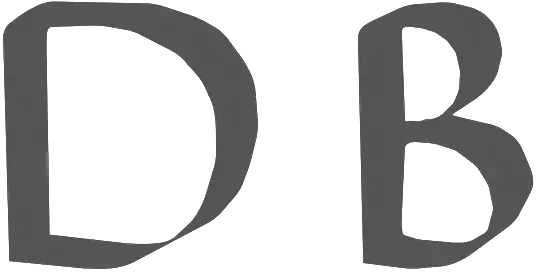
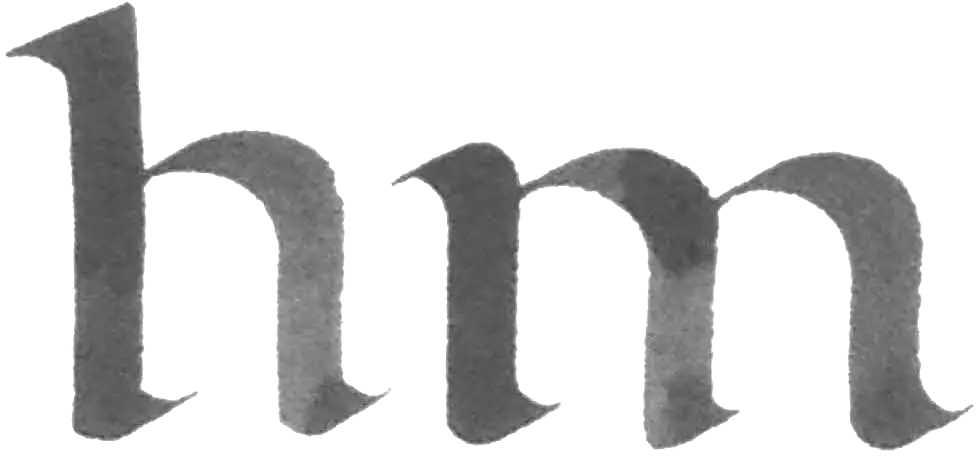
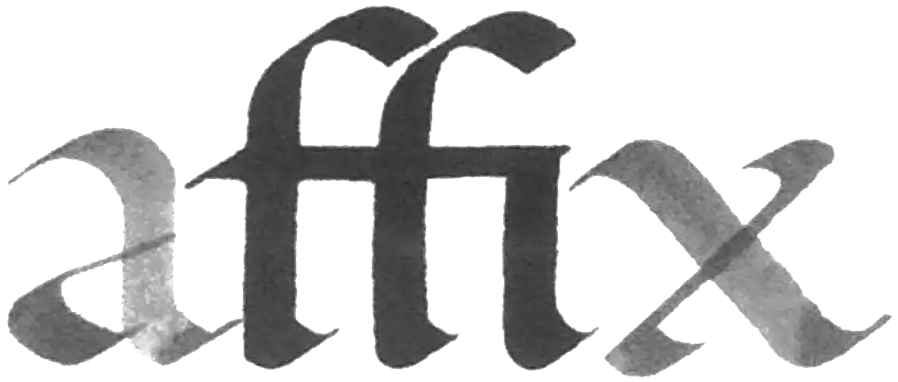

The word is the condition for what we call reading. This is easy to see. We only have to imagine a newspaper or a book set entirely in capital letters. When capitals are well set, the distances between the letters are equivalent, but the great differences in the amount of white within the letters make a word image unattainable: at best capitals comprise a handsome row of letters (figure 5.1). The white shape inside the D is repeated in the B, but the shapes are much smaller in the B because two forms must make do with the same height as the D. The white between the letters cannot be simultanously identical to the white of the D and to the white of the B. The basis for a rhythmic bond is not present in capitals. Capitals need to be spread across a space in such a way that the differences in interior shape do not disturb. This requires a great deal of room between letters and little room between lines. Text set in capitals consists not of lines and words, but of letters.
 In the minuscule this is different (figure 5.2). The interior shapes of the m consist of a repetition of the interior shapes of, among others, the h, however these shapes are not stacked above each other, but beside each other, so they can be equivalent. Hence the minuscule is capable of a rhythmic bond. Yet this is not enough. Imagine a newspaper or a book consisting entirely of lines where the rhythmic ties are not disturbed by word spaces.This would also make readingvirtually impossible. Hence the invention of reading consists in the interruption of the rhythmic integrity of the line. A minor disturbance of the rhythm appears to be enough for words to be distinguished as rhythmic units. Something this simple is an invention because it is only simple in retrospect. It is hardly obvious that disturbing the rhythm will enhance the accessibility of a script (the minuscule) that owes its very shape to the rhythmic flow of the line. After the semitic invention of the alphabet, the invention of the word is the single most important invention that I know. The word - and with it, reading-is what has made western civilization possible. I want to take stock of this turning point in the story of civilization, but I cannot find reference to it in the history books, nor in the palaeographic corpus. Even in culturalhistorical literature the concept of the word does not make an appearance. I had to seek out the invention of the word on my own from reproductions of old manuscripts. If I can rely upon the dating of the manuscripts and on the identifications of their origins, then the word appears to have been invented in Ireland in the first half of the seventh century.
In the sixth century, systematic separation of words does not occur. Interruptions that look like word separations appear to mark the end of a sentence or phrase. In the ninth century word separation is the rule. In the eighth century the word image appears only in scriptoria established in the wake of the Irish-Anglo-Saxon mission. Before that it is limited to books written in Ireland and England, and the oldest manuscripts that systematically exhibit word images are all Irish. They are dated at the beginning of the seventh century.
This is the complete report of my investigation into the origins of the word. My conclusion is hardly more than a supposition. I have little understanding of manuscripts; I have simply relied on the captions of the reproductions I have compared. Research into the invention of the word has yet to begin. I have made up my Irish inventor, but he is indeed real enough for me to ask him how he came upon his idea. He seems to want to say that the separation of sentences with a slight disturbance of the rhythm has inspired him; maybe errors, of the kind every writer makes in transcribing a text, also played a role. I would want to ask my self-made colleague yet another question, but this time he does not answer: in the seventh century the Christianizing of Europe begins in Ireland. Sometimes the missionaries pick up the sword, but they have an effective new weapon at their disposal: the word. In the seventh century the islamification of North Africa begins in Arabia. These missionaries swing the sabre much more visibly, but a careful reading of the Sunna suggests that true religion has another mighty weapon: the word. Since early times Arabic writing has exhibited an inclination to ligatures, that is, letters with common strokes, such as also appear in western writing (figure 5.3)·
Ligatures simplify the pattern of strokes and most of the time that works to benefit the word image. However, in the seventh century the ligature becomes the rule in Arabic writing: with a few exceptions, a word is a ligature. The Arabic principle that binds the letters of the word to each other with black strokes is the opposite of the western word, which is founded on the cohesion of white forms, but this correspondence remains: in the seventh century an expansive culture avails itself of a new way of writing in which words are separated. The question of whether Arabs and Irish knew each other has been raised before-ornamentation in Irish plastic art was the occasion. I get the impression that the question is mentioned in art historical literature only as a curious example of wild speculation. My question could be subject to the same fate. I do not mention it here to give it a certain status, but to accentuate the importance I attach to the invention of the word.
In general the sciences have the inclination to bypass whatever appears open to plain view: the strange and difficult to access evidently has more attraction. In the end there is only one remaining blank space on the map: the place we occupy. The Arabic ligature does have the attention of western science, but the fundaments of western writing have been left untouched. It does not matter to me how the answer to my question will come out. What does matter is that this answer can only be given by somebody who has first tak en western writing into account.
It is possible that I have given the impression that the invention of the word is a hiatus in the otherwise complete history of writing. I should correct that: the history of writing does not exist. There is something that goes by that name, but it is not what it claims to be. Consider the following.
At first writing is logographic - each token (for instance A) stands for a word. Thereafter writing becomes syllabic-each token (for instance A) stands for a syllable. Finally writing is phonetic-each token (for instance A) stands for a sound. The A is not at issue in this history. It is not writing that changes, but the meaning that is attached to the token. Had the token changed, the change would not be of interest to the so-called history of writing. This so-called history of writing is not a history of writing but a schematization of the evolution of spelling. The schema is crude; whether a spelling can be considered phonetic depends on the rules established for a specific language. Present-day Malaysian spelling is much more phonetic than English spelling. Add to that, that the schema is heavily biased toward the writer. A Malaysian can imagine that he is writing phonetically, but he does not read phonetically, because all of western civilization reads by recognizing one or more words as tokens of lexical words in one glance, so that the reader uses western writing logographically, and that is possible only if the writer makes rhythmic words. Spelling is keyed to writing, but spelling is not writing and a history of spelling is something other than a history ofwriting. How it looks, I do not know, because the history of writing is yet to be written.